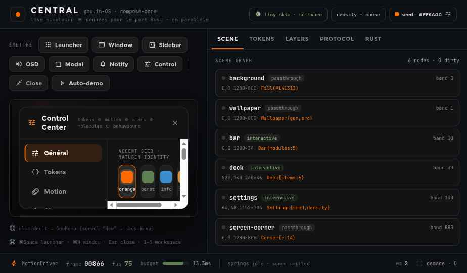
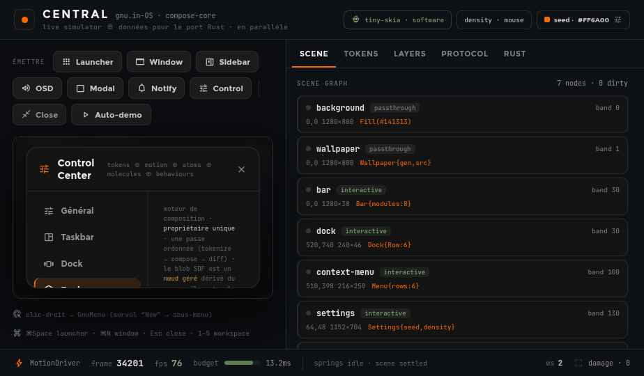
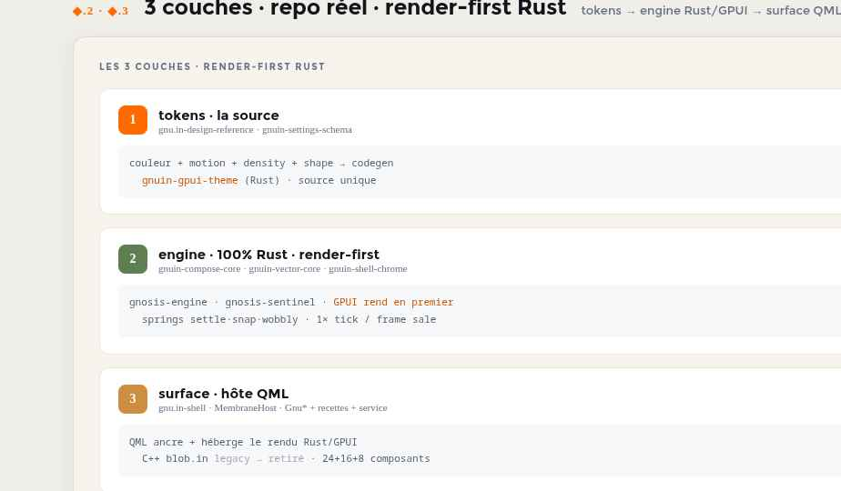

01 · motion section
Sequence map
Une section pour relier les micro-états aux surfaces visibles: apparition, focus, confirmation, sortie.

Une section pour relier les micro-états aux surfaces visibles: apparition, focus, confirmation, sortie.

Les interactions radiales doivent rester lisibles en mouvement, même lorsque la surface se densifie.

Le motion design rejoint le moteur quand les recettes deviennent vérifiables par surface.
